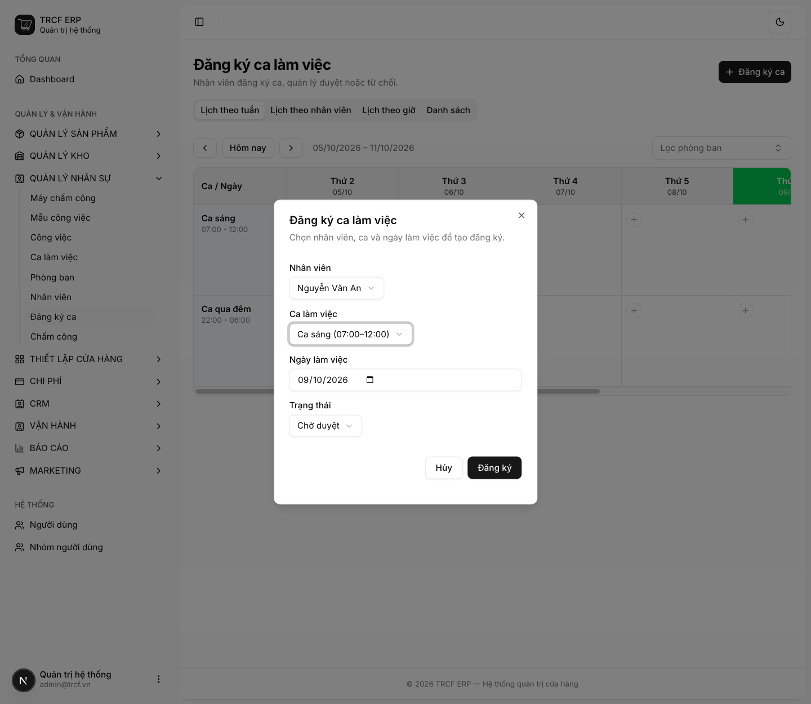
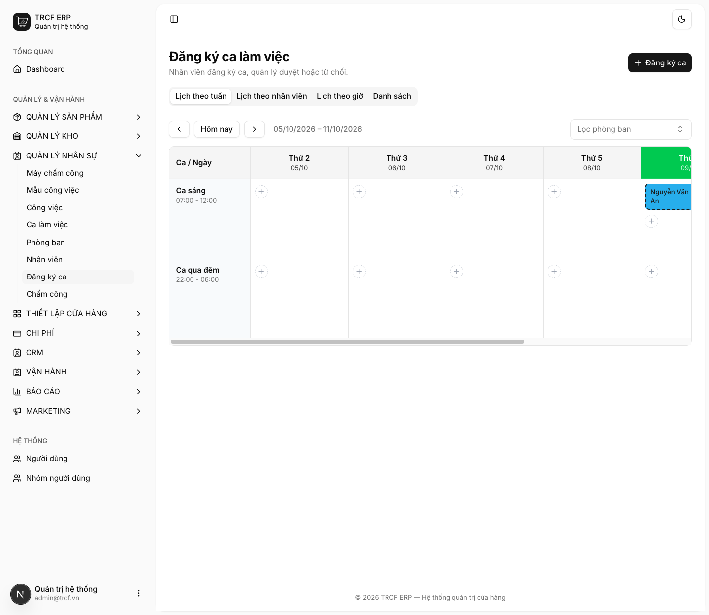
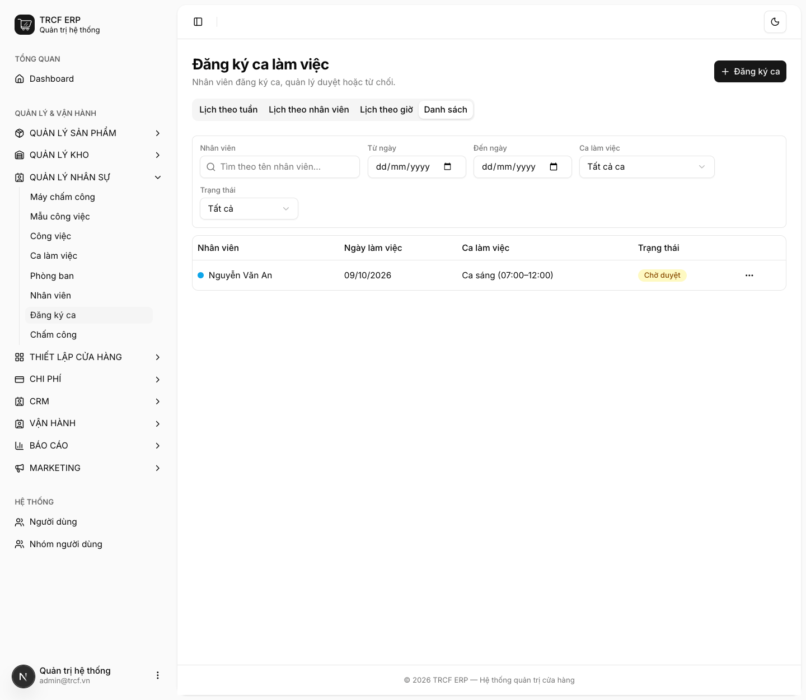
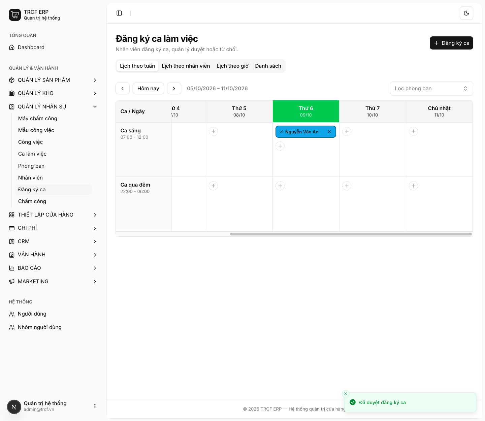

Chương 7 · Quản lý ca làm và chấm công
7.3 Đăng ký và duyệt ca cho nhân viên
1. Đường dẫn vào chức năng
Menu trái: Quản lý nhân sự → Đăng ký ca (địa chỉ /shift-registrations).
2. Ví dụ nền và các bước thực hiện
Ví dụ: đăng ký "Nguyễn Văn An" làm "Ca sáng" ngày 09/10/2026, quản lý duyệt.
- Đăng ký mới có trạng thái "Chờ duyệt".
- Quản lý bấm Duyệt → "Đã duyệt".
Bước 1Bấm Đăng ký ca và khai phiếu
- Vào Quản lý nhân sự → Đăng ký ca, bấm Đăng ký ca.
- Nhân viên: chọn "Nguyễn Văn An".
- Ca làm việc: chọn "Ca sáng (07:00–12:00)".
- Ngày làm việc: chọn ngày làm (mặc định hôm nay).
- Trạng thái: giữ "Chờ duyệt".
- Bấm nút Đăng ký.

Bước 2Xem trên Lịch theo tuần
- Tab Lịch theo tuần: hàng là ca, cột là ngày.
- Ô ngày 09/10 của "Ca sáng" hiện "Chờ duyệt" + tên "Nguyễn Văn An".
- Mỗi ô có nút Duyệt, Từ chối, Xóa, và Thêm nhân viên để đăng ký thêm.

Bước 3Xem trên Danh sách
- Bấm tab Danh sách.
- Lọc theo Nhân viên, Từ ngày / Đến ngày, Ca làm việc, Trạng thái.
- Cột Trạng thái hiện nhãn "Chờ duyệt".
- Bấm nút … cuối dòng để thao tác.

Bước 4Quản lý duyệt
- Quay lại Lịch theo tuần.
- Bấm Duyệt ở ô đăng ký (hoặc Từ chối nếu không đồng ý).
- Ô chuyển sang trạng thái Đã duyệt.

3. Giải thích các trường
| Trường | Điền gì | Bắt buộc |
|---|---|---|
| Nhân viên | Người làm ca | ✅ |
| Ca làm việc | Ca đã khai ở mục 7.2 | ✅ |
| Ngày làm việc | Ngày làm | ✅ |
| Trạng thái | Mặc định "Chờ duyệt" | — |
Vì sao bắt buộc phải duyệt
Trạng thái Đã duyệt là đầu vào của hai việc khác:
4. Lưu ý quan trọng
⚠️
Bấm duyệt hai lần cho cùng bản ghi sẽ bị chặn.
- Trạng thái chỉ đi một chiều từ Chờ duyệt.
💡
Đăng ký trùng (cùng người, cùng ca, cùng ngày) được phép.
- Để nhân viên bị từ chối rồi đăng ký lại.